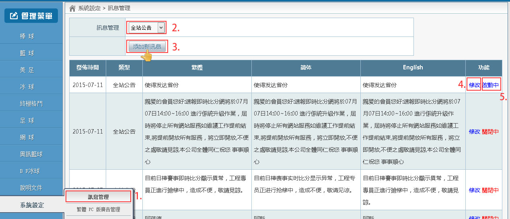
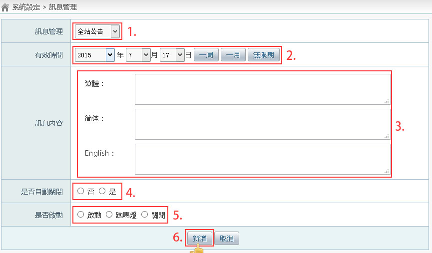
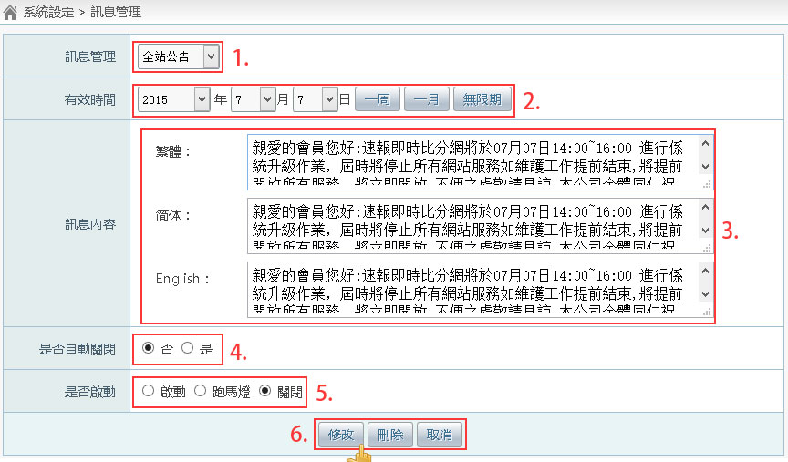

訊息管理

操作步驟：
- 點擊【訊息管理】(系統設定 -> 訊息管理)
- 訊息管理：選擇訊息的種類，請直接使用預設的【全站公告】
- 點擊【添加新訊息】，進入新增畫面
- 點擊【添加新訊息】，進入修改畫面
- 【啟動中】，表示目前此訊息將會在速報前台顯示
一、添加新訊息

操作步驟：
- 訊息管理：選擇訊息的種類，請直接使用預設的【全站公告】
- 有效時間：輸入一個日期，在這個日期到達之前，訊息將會在速報前台顯示
- 【一週】：將有效日期設定為當天日期往後算 7 天
- 【一月】：將有效日期設定為當月月底
- 【無限期】：將有效日期設定為當年度的最後一天
- 訊息內容：請輸入要顯示的訊息文字
- 是否自動關閉：
- 【否】：未關閉訊息前，不管有效時間，一直顯示此訊息
- 【是】：未關閉訊息前，超過有效時間後，不顯示此訊息
- 是否啟動：
- 【啟動】：訊息不會用跑馬燈的方式在速報前台顯示，只會在訊息區顯示
- 【跑馬燈】：訊息以跑馬燈的方式在速報前台顯示，同時也會在訊息區顯示
- 【關閉】：不會在速報前台顯示此訊息
- 點擊【新增】
二、修改訊息

操作步驟：
- 訊息管理：選擇訊息的種類，請直接使用預設的【全站公告】
- 有效時間：輸入一個日期，在這個日期到達之前，訊息將會在速報前台顯示
- 【一週】：將有效日期設定為當天日期往後算 7 天
- 【一月】：將有效日期設定為當月月底
- 【無限期】：將有效日期設定為當年度的最後一天
- 訊息內容：請輸入要顯示的訊息文字
- 是否自動關閉：
- 【否】：未關閉訊息前，不管有效時間，一直顯示此訊息
- 【是】：未關閉訊息前，超過有效時間後，不顯示此訊息
- 是否啟動：
- 【啟動】：訊息不會用跑馬燈的方式在速報前台顯示，只會在訊息區顯示
- 【跑馬燈】：訊息以跑馬燈的方式在速報前台顯示，同時也會在訊息區顯示
- 【關閉】：不會在速報前台顯示此訊息
- 點擊
- 【修改】：儲存修改後的訊息
- 【刪除】：刪除這筆訊息
- 【取消】：不儲存資料，回到訊息管理